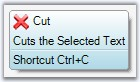
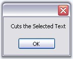

We can get or set the SuperToolTip programmatically using the below two methods.
|
SuperToolTip Method |
Description |
|
GetToolTip |
Gets the ToolTipInfo for any control. If the ToolTip properties change dynamically in an application, you can use this method to find out what information is exhibited at any point, depending upon the state of the application. |
|
SetToolTip |
Sets the ToolTipInfo for any control. |
|
[C#]
private void buttonAdv1_Click(object sender, EventArgs e) { // Gets the text set for the Body of TextBox tooltip. MessageBox.Show (this.superToolTip1.GetToolTip(this.textBox1).Body.Text.ToString ()); }
// To add a ToolTip through code. this.superToolTip1.SetToolTip(this.textBox1, "ToolTipText"); |
|
[VB.NET]
Private Sub buttonAdv1_Click(ByVal sender As Object, ByVal e As EventArgs) ' Gets the text set for the Body of TextBox tooltip. MessageBox.Show(Me.superToolTip1.GetToolTip(Me.textBox1).Body.Text.ToString) End Sub
' To add a ToolTip through code. Me.superToolTip1.SetToolTip(Me.textBox1, "ToolTipText") |

Figure 1469: ToolTip Sample

Figure 1470: MessageBox Displaying the ToolTipText of the Body part Using GetToolTip Method
 Note: You can also set tooltip using UpdateToolTip Event.
Note: You can also set tooltip using UpdateToolTip Event.